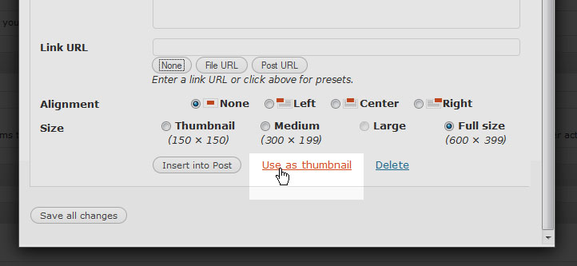
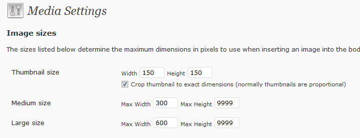
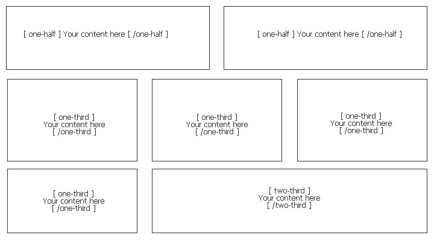
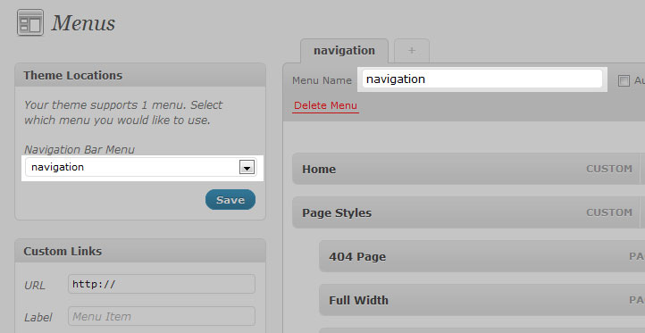
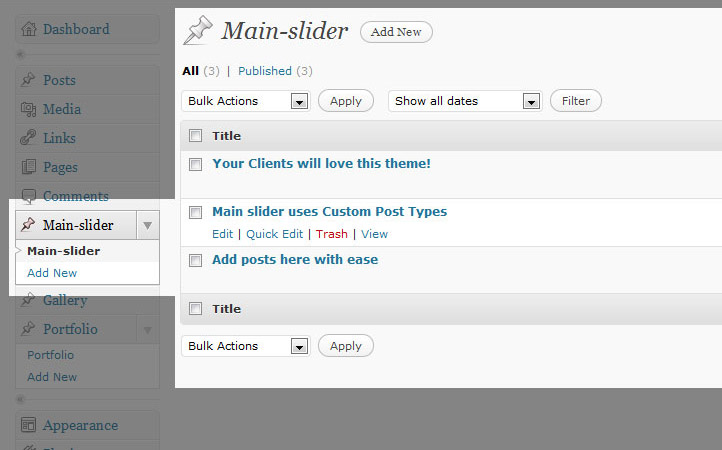
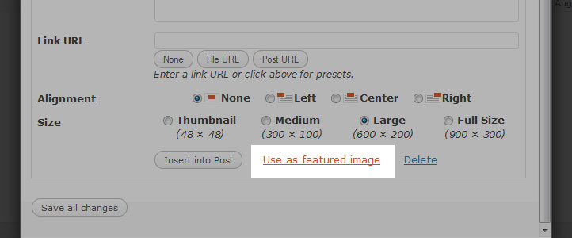
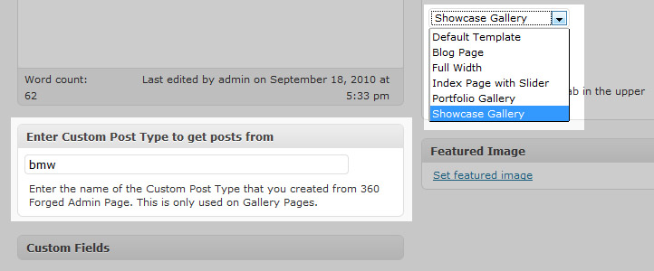

Fortitude is a premium theme for Wordpress 3.0. Its an affordable solution for people looking to start their multiple content website with ease. This theme comes fully equipped with up to date features seen across many of todays top industry standard wordpress based sites. Features include integrated Related Posts, Popular Posts, JQuery Enhacements, Shortcodes, custom widgets and many more.
1. Pre Installation and Setup Steps
You need a working verion of Wordpress 3.0 and above.
I'll be making lots of references to the Worpdress admin panel in this documentation. If you're totally new to Wordpress, take a few minutes to familiarize yourself with how the admin panel is laid out so you won't be lost when I instruct you to open up "Appearance > Widgets" or something like that.
Also, its higly recommended that you familiarize with Wordpress 3.0 Custom Post Types . This is the key to using this the main slider and portfolio sections.
Installing the Theme
You need to upload the theme files to your Wordpress installation's wp-content/themes / folder. Then go to your Wordpress administration panel and activate the Airborne theme from the Appearance > Themes pane.
DO NOT install it like wp-conten/themes/fortitude-wp/fortitude-wp /...
DO install it like wp-content/themes/fortitude-wp.
2. Fortitude Theme Settings
Upon activation, the Wordpress Admin page will automatically open Airborne Theme Settings Page. you can select various options from 3 different headings:
Fortitude Settings
Header Settings
Styling Settings
Background Selection
Cufon Font Selections
Blog Settings
Category Selection
Breadcrumbs
Featured Image
Search Form
Tags or Cats
Single Post/Page Settings
Featured Image
Share Links
Author information
Related Posts
Footer Settings
Footer Sidebar
Copyright Text
Google Analytics
3. Images for Posts, Thumbnails and widgets
Don't be scared. Unlike any other theme out there, you don't have to upload different images, copy and paste image urls to custom fields. Fortitude theme uses the latest WP 3.0 Post Thumbnail feature . Well all you have to do is click on "Use as thumbnail " when you upload an image to a post or a page. You need to select a post thumbnail image for every post you make.

4. Wordpress MEDIA Settings
I really advise that you apply the below settings to your Wordpress so that your blog experience is easier.
Thumbnails should be 150 x 150 with cropping enabled so that you get perfect squares for widgets and Related Posts.
Large Size should be 680 x 9999 so that when you place a "Large" sized image inside a post, it fits perfectly like the demo site.

After you apply these settings, you can regenerate your thumbnails using the Regenerate Thumbnails plugin.
5. Javascript Files
This theme imports several Javascript files. All located in the "js" folder.
6. Shortcodes
A shortcode is a WordPress-specific code that lets you do nifty things with very little effort. Shortcodes can embed files or create objects that would normally require lots of complicated, ugly code in just one line. Shortcode = shortcut. You can use these shortcodes inside your posts, pages and in your sidebar widgets.
Airborne has couple of shortcodes that are custom made. You can see them here
http://kriesi.turkhitbox.com/basic-shortcodes
http://kriesi.turkhitbox.com/advanced-shortcodes
http://kriesi.turkhitbox.com/full-width
http://kriesi.turkhitbox.com/list-shortcodes
Column Shortcodes:

7. Wordpress 3 Menu Settings
There are two predifined Wordpress 3.0 Menu areas inside Airborne Theme. One is for the header menu, the other one is for the footer page list.
Create a Menu, Save it and then add it to Theme Locations on the left. And click save again.

8. Adding Posts to Main Slider
By default, there is custom post type called "Slider" created by the theme. Posts you add to this custom post type will be displayed on frontpage.

The front page images are 1020 x 400 in size. You don't have to resize your images before uploading. The theme automatically creates images of size 960x400. Make sure your uploaded images are bigger than 1020 x400.. Once you upload an image, select is as the featured image for the post.

9. Adding Custom Post Types
You can create custom post types of your own from the Theme Settings. Add names of your custom post types seperated by commas like below:
Remember to refresh the page to see the changes. You will see that for every custom post type you create, Wordpress will generate a menu on the left.
10. Portfolio Pages
As you can see from the demo page, The gallery type pages uses Custom Post Types. These are very easy to use.
When you create a Wordpress Page, Select "Portfolio Page" Template from the Page Templates.
Then enter which custom post type you would like to display to Gallery meta box.
The Page will display all posts inside that custom post type. The images are the ones selected a featured images of that post.

Showcase & Portfolio Pages Item Descriptions:
The descriptions you see on http://kriesi.turkhitbox.com/portfolio-3-columns are from Post excerpts . When you click on "Read More" button, you get to the individual item page where you can see the post content .
8. Conclusion
This completes the formal documenation on how to set this theme up. From here, the possibilities are pretty much unlimited for what you can accomplish with this theme.
You can reach me at anteksiler@gmail.com . I would love to make modifications for your needs for a price between $35 and $135 depending on how hard the modifications are.